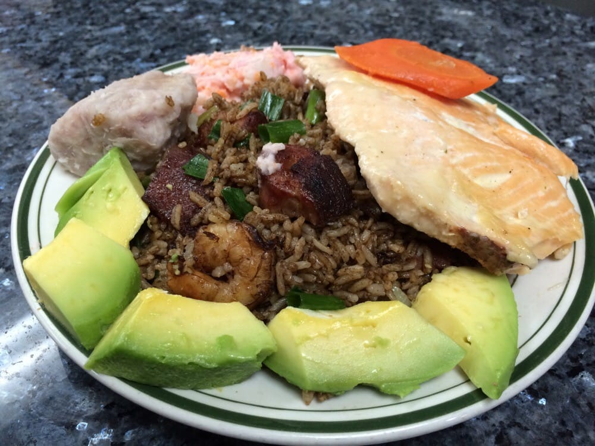
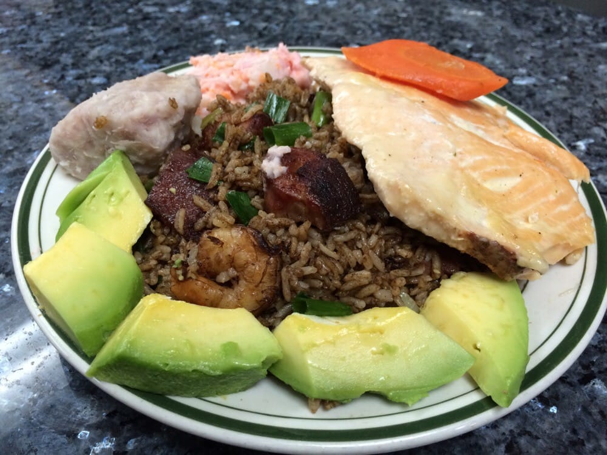

La Barca Restuarant


 

The Fast and the Furious (also known as Fast & Furious) is an American franchise based on a series of action films that is largely concerned with illegal street racing and heists, and includes material in various other media that depict characters and situations from the films. Distributed by Universal Pictures, the series was established with the 2001 film titled The Fast and the Furious; this was followed by seven sequels, two short films that tie into the series, and as of May 2015, it has become Universal's biggest franchise of all time. Falling for Dominic's younger sister, Mia Toretto (Jordana Brewster), Brian later confesses to her his status as an undercover police officer and convinces her to come with him to save her brother and his friends from the truck drivers, who have now armed themselves to combat the robberies. He tracks Dominic's location by triangulating his cell phone signal and they arrive at the hijacking in-progress to find Letty, badly injured at the car accident, and Vince critically wounded, having lacerated his arm and been shot by the truck driver. Brian and Mia work together with Dominic, Leon and Letty to rescue Vince. Brian then makes the difficult decision to blow his cover to the crew by phoning in for a medivac. The revelation enrages Dominic, fleeing with Leon, Letty, and Mia as the medivac arrives for Vince.